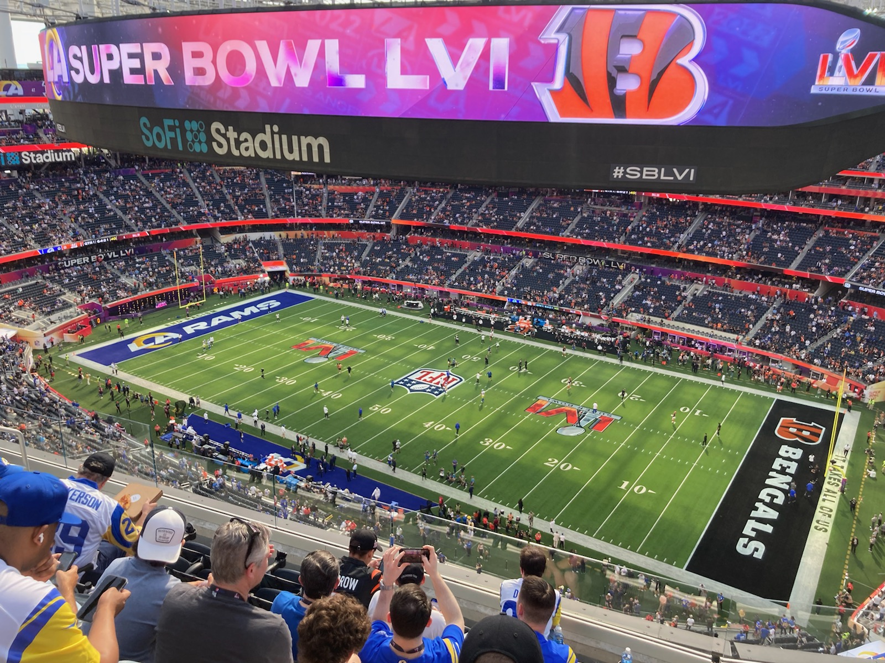

The Impact of Ratings Following A COVID-Ridden Super Bowl
Super Bowl LVI yielded a 9 percent decrease in ratings compared to Super Bowl LV. Over the past five years, both Super Bowl and NFL regular season ratings have been on the decline from the year prior. Today, the National Football League's direction remains unclear as ratings continue to fall.

Super Bowl LVI ratings see increase compared to Super Bowl LV. Credit: Creative Commons.
The Super Bowl is America's ultimate expression of patriotism. It represents American success, power, values, patriotism, politics, and business for many. For decades, many have believed that the power and popularity of the Super Bowl speak to the success of America, its citizens, and their collective labors. The Super Bowl aims to serve as the ultimate expression of America. For the past 56 years, the Super Bowl has received a huge multi-platform media coverage and ratings that no other television show can rival.
The Super Bowl is in a league of its own. The average ratings (in average viewers per minute in millions) delivered each year on Super Bowl Sunday outduel the combined ratings of the College Football National Championship, The NBA Finals, the World Series, and the Stanley Cup.
Decrease in Ratings
The NFL has set a new standard for television ratings with the Super Bowl and other prime-time telecasts; however, over the past four years, the ratings for each Super Bowl have decreased, and average NFL primetime viewership has dropped. For the first time in over two decades, the Super Bowl ratings were showing a negative trend over time. In 2021, the NFL recorded a decrease in Super Bowl ratings of 9 percent compared to 2020.
Although the decrease came as the world suffered from a global pandemic, it still does reflect the direction NFL ratings have taken over recent years. According to Nielsen Holdings, in 2021, the NFL only had 33 telecasts with more than 20 million people viewing.
Although Super Bowl LVI in 2022 saw an increase in ratings, the big game still remained under 100 million total viewers. The last time the NFL saw more than 100 million viewers tune in to the Super Bowl was in 2018 for Super Bowl LII.
NFL ratings first began to fall during the 2018 NFL season. NFL Commissioner Roger Goodell defended the league, arguing the NFL still remained dominant in the world of television.
NFL Commissioner Roger Goodell responds to reports of a decrease in ratings ahead of the 2018 NFL playoffs. Credit: Creative Commons.
“We always want ratings to go up, but we’re 37 of the top 50 shows, which is higher than ever,” Goodell said. “I think dominance of the NFL in television is still very clear.”
As ratings continue to fall in the NFL, one question remains — outside of the pandemic, what factors are leading Americans away from the National Football League and the Super Bowl?
Conference Championship Game Ratings vs. The Super Bowl
According to Syracuse University Super Bowl professor and former ESPN producer Dennis Deninger, the decrease in NFL ratings was a product of the pandemic and the controversial comments Donald Trump made toward the Colin Kaepernick National Anthem protests. Deninger believes the National Football League is in a strong position ratings-wise now that fans are more engaged in games.
“Ratings were down during the pandemic because people’s schedules had completely changed,” said Deninger. “Games with empty seats or cardboard cutouts did not give off the sense of importance that a packed house does.”
Deninger argues the sustainability in NFL ratings can be illustrated in conference championship ratings. “Not even the sum of the conference championship ratings can come close to the Super Bowl,” Deninger said. “The NFL is definitely in a strong position, particularly for the Super Bowl.”
The gap between conference championship game ratings and the Super Bowl shows more non-football fans are tuning into the Super Bowl, meaning the NFL is still maintaining interest from all groups of people. Over the past twenty years, in all but two Super Bowls, the sum of AFC and NFC Championship game viewership has been less than the Super Bowl.
Deninger believes conference championship ratings help illustrate the overall health of the sport. The audience watching the Super Bowl is universal and does not only contain NFL fans, according to Deninger. Secondly, the conference championship games are one of the best representations of the amount of NFL fans fully engaged in the sport, according to Deninger.
As shown in the graphic above, even in years when Super Bowl ratings have been low, in the last decade, the sum of AFC and NFC Championship game ratings have not equaled the Super Bowl. Meaning more people are tuning into the Super Bowl than the conference championship games combined.
The Dawn of NFL Streaming Platforms
NFL ratings are currently safe from trouble, according to Deninger. However, how ratings will be calculated in the near future is set to change as streaming platforms increase, Deninger emphasized.
Overall, the NFL is not doomed. Although ratings have been down throughout the league in recent years, the platforms Americans are using to watch the National Football League have changed. Cable television is on the way out in America. Streaming platforms such as Netflix and Amazon Prime have completely transformed how sporting events can be viewed. Beginning this season, Amazon Prime will stream Thursday Night Football games exclusively on their streaming platform. The days of watching cable television are slowly becoming a thing of the past, and the National Football League is beginning to reflect the reality that the world of streaming is taking over in America.